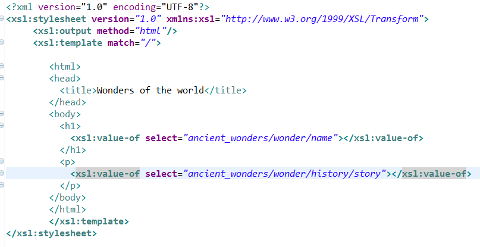
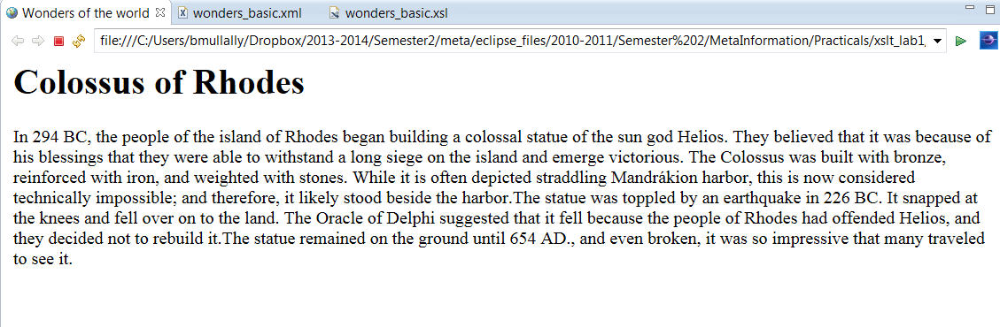
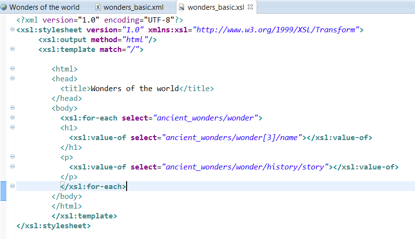
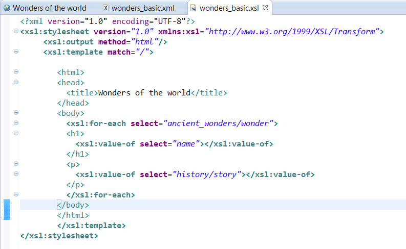
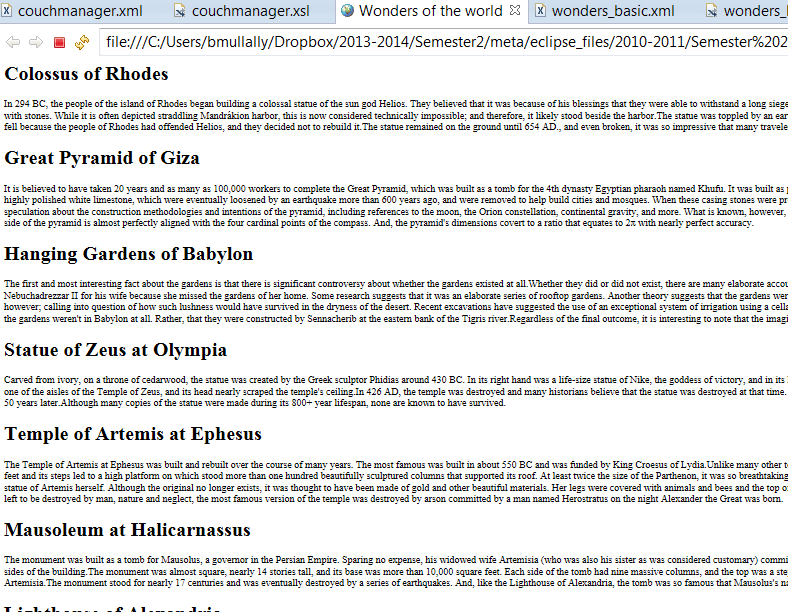
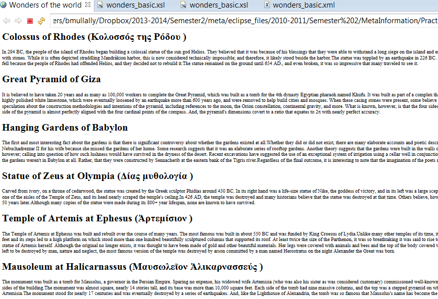

Your xsl file should look something like this having completed lab08.

Your xml viewed in the browser should look something like this:

We now want to practice using XPATH to navigate the nodes.
Instead of just outputting the first wonder, what if we wanted to output the third wonder.
We need to adjust the first value-of instruction.
<xsl:value-of select="ancient_wonders/wonder[3]/name"></xsl:value-of>
Save and then view the xml file in the browser. What do you see? Is the name now the Hanging Gardens of Babylon? What story is presented?
How do you change the story so that the third one is displayed?
So far you have outputed details from only the first wonder element. We have used the \
We now want to output each wonder element so we must use a loop.
Add the following line of code just before the heading you created for the wonder name.
<xsl:for-each select="ancient_wonders/wonder">
Add the following to just after you close the \
tag that contains the wonder details.
</xsl:for-each>
Save your xsl file and refresh the internal web browser. What is displayed? Perhaps nothing?
When you include this loop in your code you must ensure that once you enter the loop your \
If your code looks like this, nothing will be displayed.

It is trying to find a child node within the wonder node that matches
"ancient_wonders/wonder[3]/name"
Firstly there are no ancient_wonder child nodes in the wonder node.
Your code therefore should look like this:

The loop brings you to the wonder node, once inside the loop it looks for the name node and then the history/story node.
Your browser should display the xml file like this:

If we want to display the English Name for a wonder we can use XPATH to specify the value of an attribute for a particular node.
Change your code that looks like this:
<xsl:value-of select="name"></xsl:value-of>
so that it looks like this:
<xsl:value-of select="name[@language='English']"></xsl:value-of>
Important to note, within the [] you place the test, in this case we are testing if the value of the attribute language holds the word English. The attribute name must match correctly the attribute name in your xml file, the value must also match for the test to be true. You must also use single quotes ' for the value of the attribute otherwise you will get an error.
In your output in the browser you should see an English name for each wonder. Try changing this to Greek and see what happens? How many names are displayed? check in your xml file to see if the number is correct.
Change the code back to English.
When processing nodes, we may only want to display content based on a certain condition.
To do this we use the \
This instruction only offers one condition, here is the pseudo code to help you:
<h1>
xsl instruction to output English name
xsl:if name!='English'
output (
xsl instruction to get value-of name!='English'
)
end if
</h1>
Save the change to your xsl file and refersh the insternal web browser. You should see the following:

Below is an example of code suitable for the XML blog I desinged. Use this code and apply it to yours by changing the XPATH in the select="" You also must ensure that in your XML file you have the name of the images you downloaded and saved in the img folder. For example if I downloaded an image and saved it in a folder img, and the image itself is called couchmanager1.jpg then in the xml file the data stored in the image element would be img/couchmanager1.jpg
<xsl:for-each select="blog/post">
<xsl:sort select="date/month" order="descending" data-type="number"/>
<xsl:value-of select="date/day"></xsl:value-of>
<xsl:value-of select="date/month"></xsl:value-of>
<xsl:value-of select="date/year"></xsl:value-of>
<xsl:value-of select="post_title"></xsl:value-of>
<img>
<xsl:attribute name="src"><xsl:value-of select="image"/></xsl:attribute>
</img>
</xsl:for-each>
Alternatively you could apply the sort and the attribute instructions to the ancient wonders xsl file.
Upload both your ancient_wonders.xsl file and your blog.xsl file to moodle.